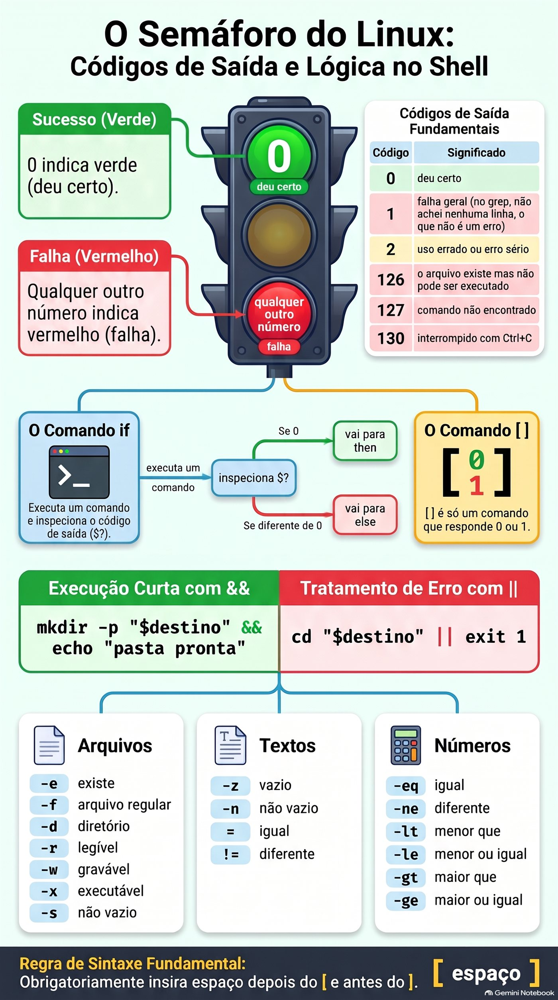
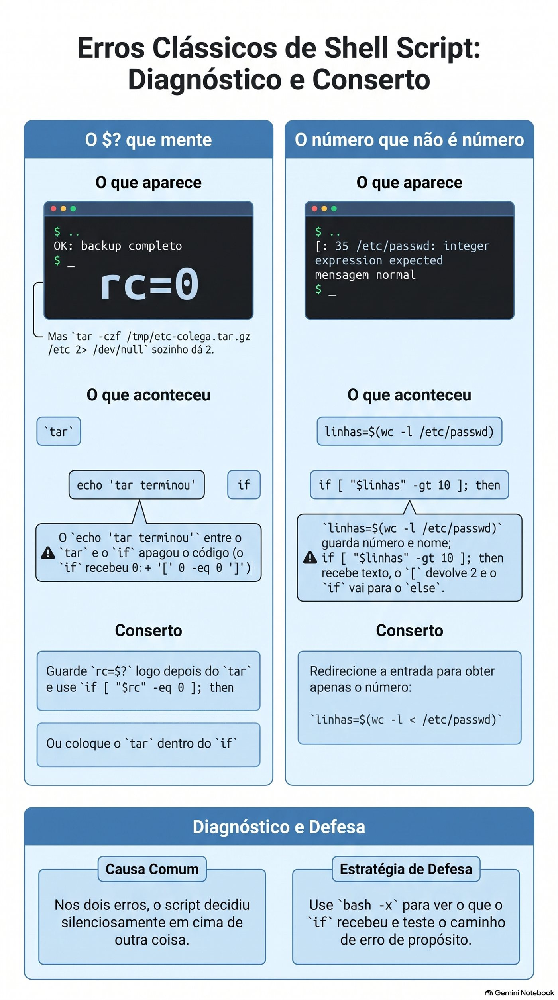

Lezione 1.9 · Decidi e ripeti
Nella Lezione 1.8, backup-app.sh ha detto OK per un backup di /etc che è stato lasciato senza i file più importanti. Oggi impara a essere diffidente: controlla il risultato di ogni passaggio, così quando qualcosa va storto lascia un record nel log e restituisce un codice che un altro script, o cron, può leggere. Quindi esegui lo stesso backup per un elenco di cartelle, con un ciclo, senza ripetere una riga.
| File | lezione 1.9 |
|---|---|
| Modulo | M1 · Riga di comando, lezione 9 di 10 |
| Quando | Settimana 3 |
| Alla fine puoi | Leggere e utilizzare il codice di uscita, $?; testare file, testi e numeri con test e [ ]; decidere con if, elif, else, && e ||; ripetere con for e while read; salvare l'output di un comando con $(...) ed eseguire calcoli con $((...)); terminare uno script con exit N; log con logger |
| Articoli di prova | LE 013.3 · LPIC-1 105.2: test, if, for, while, codice di uscita, sostituzione di comandi · RHCSA: esegue il codice in modo condizionale, utilizza cicli per elaborare file e argomenti, elaborare l'output del comando all'interno dello script |
| Prerequisiti | lezione 1.8 completata, con ~/bin/backup-app.sh su entrambe le VM |
| Tempo | Intorno alle 2:30 |
| Istantanee | m1a9-start e m1a9-end su entrambe le VM |
1 · Riscaldamento
Tre domande, a mente fredda, prima di leggere qualsiasi cosa. Scrivi le risposte; la chiave di risposta viene visualizzata alla fine.
- Nella Lezione 1.8, cosa fa
origem="${1:?uso: ...}"quando lo script viene chiamato senza argomenti? - Nella lezione 1.8, perché
backup-app.sh /etc, eseguito come utente comune, finisce per dire che il file è aperto fino alla fine? - Indovina: esegui
ls /naoexistee poiecho $?. Quale numero appare?
2 · Perché è importante
Uno script di backup viene eseguito in cron, ogni giorno alle 2 del mattino, per otto mesi. Nessuno guarda l'uscita perché "ha sempre funzionato". Il giorno in cui il disco del server muore, apri la cartella dei backup e trovi file da 45 byte di marzo: tar falliva ogni notte e lo script andava avanti e copiava il file vuoto sul NAS. Il comando ha avvertito. Lo script non ha chiesto.
Ogni comando Linux risponde, una volta terminato, con un numero: zero se ha funzionato, un altro numero se non ha funzionato. Sono le informazioni più importanti di uno script e quasi tutti gli script scadenti la ignorano. Oggi impari a leggere questo numero e decidi in base ad esso.
Secondo caso. È necessario eseguire il backup di sei cartelle, controllare dieci server o rinominare trecento registri. Copiare la stessa riga sei volte funziona fino al giorno in cui ne correggi una e dimentichi le altre cinque. Un ciclo scrive la riga una volta e la ripete per ciascun elemento.
E la prova: RHCSA richiede script che decidano e si ripetano. Un'attività tipica è "creare uno script che, per ogni utente in un elenco, esegua X; se l'argomento non viene fornito, termina con il codice 1". Il broker controlla il codice di uscita.
3 · Modello mentale
Ogni comando termina con l'accensione di un semaforo. Lo zero è verde; qualsiasi altro numero è rosso e il numero indica quale era il problema.
Il semaforo non è quello che il comando mostra sullo schermo. Un grep potrebbe non mostrare nulla e funzionare comunque; a tar potrebbe mostrare un mucchio di righe e non essere riuscito. La shell memorizza il semaforo dell'ultimo comando in $? e lo modifica con ogni nuovo comando, incluso un echo.
Con il semaforo, tre strumenti:
ifdecide. Esegue un comando e guarda il semaforo. Verde, entra inthen; rosso, vai alelse.ifnon capisce testi né numeri: solo il semaforo.- chiede
[ ]. È un comando come un altro, il cui unico compito è rispondere con il verde o il rosso.[ -d /etc ]chiede "/etcè una cartella?" e risponde con il semaforo. Ecco perché appare così spesso all'interno diif, ma non è obbligatorio. forewhilesi ripetono.forsi ripete una volta per ogni elemento di un elenco.whilesi ripete finché un comando è verde, comeread, che è verde finché ci sono ancora righe da leggere.
if tar -czf ... ; then ... else ... fi
└── roda ───┘
│
└─ semáforo ($?) 0 ──► then
≠0 ──► else
[ -d "$origem" ] é só um comando que responde 0 (sim) ou 1 (não)

if, [ ] e &&/||.4 · Concetto a più livelli
Essenziale
Il codice di uscita.
ls /etc/hostname
echo $? # 0: ha funzionato
ls /naoexiste
echo $? # 2: è andato storto; 2 è il codice ls per "Non potevo farlo"| Codice | Significato più comune |
|---|---|
0 | Ha funzionato |
1 | Fallimento generale. In grep "Non ho trovato nessuna riga", che non è un errore |
2 | Uso improprio o errore grave. In grep e tar errore vero |
126 | Il file esiste ma non può essere eseguito |
127 | Comando non trovato |
130 | Arrestato con Ctrl+C |
Anche il vostro script termina con un codice: quello dell'ultimo comando eseguito, oppure quello scelto da voi con exit N. Chiunque chiami il tuo script, che tu, un altro script o cron, legge questo numero.
&& e ||. Il modo più breve per decidere in una riga:
mkdir -p "$destino" && echo "pasta pronta" # esegui echo solo se mkdir ha funzionato
cd "$destino" || exit 1 # se il cd fallisce, termina lo scripttest e [ ]. Sono lo stesso comando con due grafie. All'interno delle parentesi, spazio dopo [ e prima di ], sempre.
| Domanda | Verde quando |
|---|---|
[ -e "$x" ] | $x esiste, qualunque sia |
[ -f "$x" ] | $x è un file comune |
[ -d "$x" ] | $x è una cartella |
[ -r "$x" ], -w, -x | Puoi leggere, scrivere, eseguire |
[ -s "$x" ] | $x esiste e non è vuoto |
[ -z "$v" ] | Il testo è vuoto |
[ -n "$v" ] | Il testo non è vuoto |
[ "$a" = "$b" ], != | Stessi testi diversi |
[ "$n" -eq 5 ], -ne, -lt, -le, -gt, -ge | Numeri: uguali, diversi, minori, minori o uguali, maggiori, maggiori o uguali |
[ ! -d "$x" ] | ! inverte la domanda |
if.
if [ -d "$origem" ]; then
echo "pasta encontrada"
elif [ -e "$origem" ]; then
echo "existe, mas não é uma pasta"
else
echo "não existe"
fiif accetta qualsiasi comando, non solo [ ]:
if grep -q root /etc/passwd; then echo "tem root"; fi
if ! tar -czf "$arquivo" -C "$pai" "$nome"; then echo "o tar falhou"; fifor. Una volta per ogni elemento:
for servidor in rocky-lab debian-lab; do
echo "conferindo $servidor"
done
for arquivo in /var/log/*.log; do # la shell assembla l'elenco, anche con spazi nei nomi
echo "$arquivo"
done
for i in {1..5}; do echo "$i"; done # da 1 a 5while read. Una volta per ogni riga di un file:
while read -r pasta; do
echo "vou guardar $pasta"
done < pastas.txt-r fa o read non utilizza le barre rovesciate. Utilizzare sempre.
$(...) e $((...)).
hoje="$(date +%F)" # memorizza l'output di un comando
linhas="$(wc -l < /etc/passwd)" # con <, wc mostra solo il numero
total=$((total + 1)) # conta con numeri interiIl backtick, `date`, ha la stessa funzione di $(date). Lo troverai nelle vecchie scritture; scrivere con $(...), che è più facile da leggere e annidare.
exit N. Termina immediatamente lo script, con il codice N. D'accordo con chi leggerà: 0 per successo e numeri diversi per errori diversi, documentati nel commento in alto.
logger. Scrive una riga nel log di sistema, con un'etichetta: logger -t backup-app "OK /etc". Da leggere: journalctl -t backup-app. Ecco come uno script cron racconta ciò che ha fatto, senza che nessuno guardi lo schermo.
Windows Bridge
| Su Windows | Su Linux | Attenzione |
|---|---|---|
%ERRORLEVEL% in cmd, $LASTEXITCODE in PowerShell | $? | Su Linux, $? cambia dopo qualsiasi comando, fino a echo |
In PowerShell, $? è True o False | In bash, $? è un numero e 0 è successo | È l'opposto dell'intuizione: 0 è buono |
if exist arquivo | if [ -e "$arquivo" ] | Gli spazi all'interno del [ ] sono obbligatori |
In PowerShell, -eq e -gt confrontano qualsiasi cosa | Al [ ], -eq e -gt sono solo per numeri; i testi usano = | [ 10 \> 9 ] confronta come testo e restituisce false |
for %%f in (*.log) do | for f in *.log; do ...; done | |
exit /b 1 | exit 1 | |
Visualizzatore eventi, Write-EventLog | logger e journalctl |
Avanzato
[[ ]]è la versione bash: accetta&&e||all'interno, confronta i modelli con==e non si interrompe con variabili vuote senza virgolette. Non esiste indash,/bin/shdi Debian. In questa lezione,[ ]tra virgolette, che funziona in qualsiasi shell.- Pipeline.
$?dicomando1 | comando2è l'ultimo comando. Untar ... | gzipcontarfallito dà il verde.set -o pipefailrende la tubazione rossa se qualche parte si guasta;${PIPESTATUS[@]}mostra il codice per ogni parte. set -eper lo script nel primo comando che fallisce, ma non è valido all'interno diif, né prima di&&e||, né nelle pipeline senzapipefail. Aiuta, ma non sostituisce l'esplicitoifnei passaggi che contano.while readessh. Unsshall'interno di unwhile read ... done < listamangia il resto dell'elenco, perché legge dalla stessa voce. Utilizzaressh -n.casedecide tra più testi contemporaneamente, comestart,stopestatus. È per il Modulo 4, negli script di servizio.tare i suoi codici. GNU tar esce con 1 quando un file viene modificato durante il salvataggio e con 2 in caso di errore fatale, comePermission denied. Entrambi sono rossi perif.
Cosa rientra nel test
- LE 013.3: cos'è
$?,ifetestbase,forin un elenco. Domande come "qual è il valore di$?dopo...". - LPIC-1 105.2:
testcon-f,-d,-z,-eq;if,for,while,seq;exit; sostituzione dei comandi; codici di uscita. C'è molta differenza tra-eqe=. - RHCSA: uno script che riceve argomenti, decide e ripete e termina con un codice di uscita specifico. Esempio: "crea
/usr/local/bin/checa, che riceve nomi utente; per ognuno che non esiste, mostra un messaggio; termina con 1 se ne manca uno."
5 · Rocky × Debian
| Rocky Linux 9 e 10 | Debian 13 | |
|---|---|---|
[[ ]] in una scrittura con #!/bin/sh | Funziona, perché /bin/sh è bash | [[: not found, perché /bin/sh è dash |
{1..5} in una scrittura con #!/bin/sh | Funziona | Mostra {1..5}, letterale |
Messaggio di [ "abc" -gt 1 ] | integer expression expected | integer expression expected. Nella nuova bash 5.3, la frase è stata abbreviata in integer expected |
logger -t backup-app "msg" | Vai al diario; rsyslog copia anche in /var/log/messages | Vai al diario; senza rsyslog installato non c'è /var/log/syslog |
Leggi cosa ha registrato logger | journalctl -t backup-app | journalctl -t backup-app |
seq 1 5 | Installato | Installato |
La regola che si applica a entrambi: #!/bin/bash in ogni script di questa lezione, [ ] tra virgolette e journalctl -t per leggere il registro.
6 · Laboratorio guidato
Fai tutto in entrambe le VM, a meno che il passaggio non ne indichi solo uno. I test rapidi sono al terminal; le scritture sono in ~/lab13/scripts; backup-app.sh installato nella lezione 1.8 è in ~/bin. In ogni passaggio, quando appare Predict, scrivere la risposta prima di premere Invio.
Passaggio 1 · Prepara
Nel nodo Proxmox:
qm snapshot 201 m1a9-inicio
qm snapshot 202 m1a9-inicioIn ogni VM:
type backup-app.sh
ls ~/lab13/arquivo/app
cd ~/lab13/scriptstype deve rispondere backup-app.sh is /home/SEU_USUARIO/bin/backup-app.sh. Se rispondi not found, rifai il passo 6 della Lezione 1.8.
Passo 2 · Il semaforo, $?
ls /etc/hostname
echo $?
ls /naoexiste
echo $?0 e poi 2. Sullo schermo appare il messaggio di errore ls; il codice va a $?.
Preveja. Subito dopo ls /naoexiste, esegui echo $? due volte di seguito. Cosa mostra ognuno?
ls /naoexiste
echo $?
echo $?2 e poi 0. Il secondo echo mostra il codice del primo echo che ha funzionato. $? viene cancellato ad ogni comando. Tienilo: è il Break A di questo corso.
Ora grep, che ha tre risposte:
grep -q root /etc/passwd; echo "achou: $?"
grep -q naoexiste /etc/passwd; echo "não achou: $?"
grep -q root /arquivo/inexistente; echo "erro: $?"0, 1 e 2. -q lascia stare grep: non mostra nulla, risponde solo con il codice.
Decidi 1 · Cosa significa 1. In uno script, grep -q "ERRO" app.log terminava con il codice 1. Cos'è successo?
- A)
grepnon riuscito: il file probabilmente non esiste. - B)
grepha funzionato e non ha trovato alcuna riga conERRO. - C)
greptrovato esattamente una riga conERRO. - D)
grepè stato interrotto.
Scegliere la lettera prima di guardare la tabella.
| Se hai selezionato | Risultato | Perché |
|---|---|---|
| A | ❌ Sbagliato | File inesistente riporta 2, con messaggio No such file or directory. |
| B | ✅ Giusto | Per grep, 1 è "Ho cercato e non l'ho trovato". Nel monitoraggio dei log, questa è la buona notizia. |
| C | ❌ Sbagliato | Il codice non conta le righe. Trovarne uno o mille dà 0. Per contare, grep -c. |
| D | ❌ Sbagliato | Interrotto con Ctrl+C restituisce 130. |
Da risolvere: il rosso non è sempre un errore. Leggi man del comando, nella sezione STATO USCITA, prima di decidere cosa significa ciascun numero.
Check out:
man grep | grep -A6 'EXIT STATUS'Passo 3 · Chiedi con [ ]
[ -d /etc ]; echo "pasta: $?"
[ -f /etc ]; echo "arquivo: $?"
[ -f /etc/hostname ]; echo "arquivo: $?"
[ -z "" ]; echo "vazio: $?"
[ 10 -gt 9 ]; echo "maior: $?"0, 1, 0, 0, 0. [ è un comando vero e proprio:
type [
ls -l /usr/bin/[Essendo un comando necessita di spazi, come tutti gli altri. Guarda cosa succede senza:
[-d /etc]bash: [-d: command not found, codice 127. La shell ha cercato un programma chiamato [-d.
Predict. [ 10 \> 9 ] confronta 10 con 9 usando >. Verde o rosso?
[ 10 \> 9 ]; echo $?
[ 10 -gt 9 ]; echo $?1 e 0. Con > i due lati vengono confrontati come testo, lettera per lettera, come nel dizionario: "1" viene prima di "9", quindi "10" è più piccolo. I numeri si confrontano con -gt, -lt e azienda.
Decidi 2 · La variabile vuota in [ ]. Lo script ha if [ $resposta = sim ]; then. Un giorno resposta arriva vuoto. Cosa succede?
- A) Il test restituisce falso, in silenzio, e lo script va a
else. - B) Appare
[: =: unary operator expected, il test restituisce 2 e lo script va aelse. - C) Lo script si interrompe immediatamente con un errore di sintassi.
- D) Il test restituisce vero, perché vuoto è uguale a qualsiasi cosa.
Scegli la lettera prima di guardare la tabella.
| Se hai selezionato | Risultato | Perché |
|---|---|---|
| A | ❌ Sbagliato | Sarebbe così tra virgolette. Senza virgolette, la variabile vuota scompare dalla riga. |
| B | ✅ Giusto | Senza virgolette, la shell assembla [ = sim ]. [ vede solo due pezzi e si lamenta. Il codice 2 è rosso, quindi if va a else e lo script segue, con uno strano messaggio sullo schermo. |
| C | ❌ Sbagliato | Non è un errore di sintassi di bash: è [, un comando, che si lamenta degli argomenti. La sceneggiatura continua. |
| D | ❌ Sbagliato | Nessun comando considera vuoto come un carattere jolly. |
Da correggere: variabile tra [ ] sempre tra virgolette: [ "$resposta" = sim ]. È la regola della lezione 1.8 con un motivo in più.
Check out:
resposta=
[ $resposta = sim ]; echo $?
[ "$resposta" = sim ]; echo $?unary operator expected e 2, poi solo 1, pulito.
Passo 4 · Decidi con if
cat > existe.sh <<'EOF'
#!/bin/bash
# existe.sh - diz o que é cada caminho recebido
# Uso: existe.sh CAMINHO
alvo="${1:?uso: $0 CAMINHO}"
if [ -d "$alvo" ]; then
echo "$alvo é uma pasta"
elif [ -f "$alvo" ]; then
echo "$alvo é um arquivo de $(wc -c < "$alvo") bytes"
elif [ -e "$alvo" ]; then
echo "$alvo existe, mas não é pasta nem arquivo comum"
else
echo "$alvo não existe" >&2
exit 1
fi
EOF
chmod +x existe.sh
./existe.sh /etc; echo "rc=$?"
./existe.sh /etc/hostname; echo "rc=$?"
./existe.sh /dev/null; echo "rc=$?"
./existe.sh /naoexiste; echo "rc=$?"Cartella, file, "esiste ma non è" e não existe con rc=1. >&2 invia il messaggio di errore all'output di errore, lezione 1.5: chi reindirizza solo l'output normale vede comunque l'errore.
Decidi 3 · Quale if è corretto? Vuoi sapere se l'utente root appare in /etc/passwd.
- A)
if [ grep -q root /etc/passwd ]; then - B)
if grep -q root /etc/passwd; then - C)
if [ $(grep root /etc/passwd) ]; then - D)
if grep -q root /etc/passwd = 0; then
Scegli la lettera prima di guardare la tabella.
| Se hai selezionato | Risultato | Perché |
|---|---|---|
| A | ❌ Sbagliato | [ riceve le parole grep, -q, root e /etc/passwd come testo e non sa cosa farne: si lamenta con un errore di sintassi, la cui frase cambia a seconda della versione di bash, e restituisce 2. grep non viene mai eseguito, e if va a else. |
| B | ✅ Giusto | if corre grep e guarda il semaforo. È la forma più breve e corretta. |
| C | ❌ Sbagliato | Funziona per caso finché l'output è una sola parola: la riga fondamentale non ha spazi. Se grep trova due righe, oppure una con spazio, [ riceve troppi pezzi e protesta. Usa l'output, quando ciò che conta è il codice. |
| D | ❌ Sbagliato | grep riceve = e 0 come nomi di file. Con -q si ferma al primo colpo e non apre nemmeno i due, quindi sembra funzionare. Il giorno in cui non lo trovi, lamentati che = e 0 non esistono e restituisci 2. Giusto sembra essere sbagliato. |
Per risolvere: if riceve un comando. Utilizzare [ ] solo quando la domanda riguarda file, testi o numeri; Quando è "questo comando ha funzionato?", inserisci il comando diretto.
Selezionare A per visualizzare il messaggio:
if [ grep -q root /etc/passwd ]; then echo sim; else echo não; fi
if grep -q root /etc/passwd; then echo sim; else echo não; fiE nel modo più breve, con && e ||:
grep -q root /etc/passwd && echo "tem root" || echo "sem root"Passaggio 5 · Ripetere con for
for vm in rocky-lab debian-lab; do
echo "vou conferir $vm"
done
for i in {1..3}; do echo "volta $i"; done
for i in $(seq 1 3); do echo "volta $i"; doneOra, una cartella con nomi di registro, uno dei quali con uno spazio, come accade quando il file proviene da Windows:
mkdir -p ~/lab13/logs-teste
cd ~/lab13/logs-teste
touch app.log "nota fiscal.log" erro.log
ls -lDecidi 4 · Esamina i registri. Quale ciclo esamina i tre file, uno alla volta, con il nome intero?
- A)
for f in $(ls); do echo "[$f]"; done - B)
for f in *.log; do echo "[$f]"; done - C)
for f in "$(ls)"; do echo "[$f]"; done - D)
for f in $(ls *.log); do echo "[$f]"; done
Scegli la lettera prima di guardare la tabella.
| Se hai selezionato | Risultato | Perché |
|---|---|---|
| A | ❌ Sbagliato | L'output di ls è suddiviso in spazi: [nota] e [fiscal.log] compaiono separatamente. Quattro giri, due sbagliati. |
| B | ✅ Giusto | La shell stessa assembla la lista con *, e ogni nome diventa un intero elemento, con o senza spazio. Tre giri. |
| C | ❌ Sbagliato | Le virgolette riuniscono tutto in un unico elemento: un ritorno a capo, con all'interno i tre nomi e le interruzioni di riga. |
| D | ❌ Sbagliato | Lo stesso problema di A. *.log aiuta ls, ma l'interruzione degli spazi avviene più tardi. |
Per risolvere: per scorrere i file, utilizzare * direttamente in for. Mai for f in $(ls).
Check out:
for f in $(ls); do echo "[$f]"; done
for f in *.log; do echo "[$f]"; doneE un ciclo utile, che conta le righe di ogni registro:
for f in *.log; do
echo "$(wc -l < "$f") linhas $f"
done
cd ~/lab13/scriptsPasso 6 · Ripeti con while read e conta
Un elenco di cartelle, una per riga, con una riga vuota e una cartella che non esiste, apposta:
cat > pastas.txt <<'EOF'
/home/SEU_USUARIO/lab13/arquivo/app
/home/SEU_USUARIO/lab13/logs-teste
/home/SEU_USUARIO/naoexiste
EOF
sed -i "s|SEU_USUARIO|$USER|" pastas.txt
cat -A pastas.txtIl cat -A mostra la riga vuota solo come $. Ora leggi riga per riga, saltando quella vuota:
total=0
while read -r pasta; do
[ -z "$pasta" ] && continue
total=$((total + 1))
if [ -d "$pasta" ]; then
echo "OK $pasta"
else
echo "FALTA $pasta"
fi
done < pastas.txt
echo "Total: $total"Due righe OK, una FALTA, Total: 3. continue passa al ciclo successivo.
Decidi 5 · Il totale che somma. Un collega ha scritto lo stesso ciclo in questo modo: cat pastas.txt | while read -r pasta; do ... done, quindi echo "Total: $total". Cosa appare alla fine?
- A)
Total: 3, lo stesso. - B)
Total: 0. - C)
Total: 4, perché ora conta la riga vuota. - D) Errore:
whilenon accetta pipe.
Scegliere la lettera prima di guardare la tabella.
| Se hai selezionato | Risultato | Perché |
|---|---|---|
| A | ❌ Sbagliato | All'interno del loop il conteggio arriva a 3. Ma succede altrove. |
| B | ✅ Giusto | In una pipe, bash esegue while in una shell figlia. Il total che arriva a 3 è quello del figlio, e muore con lui. Il echo all'esterno vede il total prima del loop: 0. È lo stesso motivo del cd che non resta, nella lezione 1.8. |
| C | ❌ Sbagliato | [ -z ] con continue salta la riga vuota in entrambe le direzioni. |
| D | ❌ Sbagliato | while accetta la pipa senza lamentarsi. Ecco perché l'errore è insidioso: non c'è nessun messaggio. |
Per risolvere: in un ciclo che memorizza qualcosa per dopo, leggere il file con done < arquivo, mai con cat arquivo |.
Check out:
total=0
cat pastas.txt | while read -r pasta; do [ -z "$pasta" ] && continue; total=$((total + 1)); done
echo "Total pelo pipe: $total"
total=0
while read -r pasta; do [ -z "$pasta" ] && continue; total=$((total + 1)); done < pastas.txt
echo "Total pelo <: $total"Passo 7 · backup-app.sh impara a diffidare
È la correzione promessa nella Decisione 4 della lezione 1.8. La nuova versione controlla ogni passaggio, restituisce un codice diverso per ogni tipo di problema, registra tutto nel proprio registro e diario e non lascia un backup incompleto che sembra buono.
cp ~/bin/backup-app.sh ~/bin/backup-app.sh.v3
cat > ~/bin/backup-app.sh <<'EOF'
#!/bin/bash
# backup-app.sh - backup de uma pasta pelo Protocolo da Aula 1.7
# Uso: backup-app.sh PASTA [DESTINO]
# PASTA o que guardar, obrigatório
# DESTINO onde guardar, padrão ~/backups
# Saída: 0 = backup completo e conferido
# 1 = o backup falhou ou ficou incompleto
# 2 = a pasta não existe
origem="${1:?uso: $0 PASTA [DESTINO]}"
destino="${2:-$HOME/backups}"
nome="$(basename "$origem")"
pai="$(dirname "$origem")"
data="$(date +%F_%H%M)"
arquivo="$destino/$nome-$data.tar.gz"
log="$destino/backup-app.log"
mkdir -p "$destino" || exit 1
if [ ! -d "$origem" ]; then
echo "ERRO: $origem não é uma pasta" >&2
echo "$(date '+%F %T') ERRO pasta $origem" >> "$log"
logger -t backup-app "ERRO pasta $origem"
exit 2
fi
echo "Backup de $origem para $arquivo"
if ! tar -czf "$arquivo" -C "$pai" "$nome"; then
echo "ERRO: o tar falhou; o backup de $origem está incompleto" >&2
mv "$arquivo" "$arquivo.INCOMPLETO" 2> /dev/null
echo "$(date '+%F %T') ERRO tar $origem" >> "$log"
logger -t backup-app "ERRO tar $origem"
exit 1
fi
if ! tar -tzf "$arquivo" > /dev/null; then
echo "ERRO: $arquivo não abre até o fim" >&2
echo "$(date '+%F %T') ERRO teste $arquivo" >> "$log"
logger -t backup-app "ERRO teste $arquivo"
exit 1
fi
sha256sum "$arquivo" > "$arquivo.sha256"
chmod 600 "$arquivo" "$arquivo.sha256"
echo "$(date '+%F %T') OK $origem $arquivo" >> "$log"
logger -t backup-app "OK $origem $arquivo"
ls -lh "$arquivo" "$arquivo.sha256"
EOF
bash -n ~/bin/backup-app.sh && echo "sintaxe ok"Leggi lo script dall'alto verso il basso prima di eseguirlo. Notare tre scelte:
- La cartella test viene prima di qualsiasi
tar. Prima l'errore di poco conto. tarè dentroif. Non c'è nessun$?da eliminare lungo il percorso.- Un backup non riuscito non viene eliminato: viene rinominato
.INCOMPLETO. Nessuno lo confonde con uno buono e puoi ancora guardare quello che hai inserito.
Ora i tre percorsi, controllando il codice di ognuno:
backup-app.sh ~/lab13/arquivo/app /tmp/bkp9; echo "rc=$?"
backup-app.sh ~/naoexiste /tmp/bkp9; echo "rc=$?"
backup-app.sh /etc /tmp/bkp9 2> /tmp/bkp9-erros.txt; echo "rc=$?"Predict. Prima di eseguire la terza riga: quale rc e quali nuovi file compaiono in /tmp/bkp9?
ls -l /tmp/bkp9
tail -3 /tmp/bkp9-erros.txt
cat /tmp/bkp9/backup-app.logrc=0, rc=2 e rc=1. Per /etc, tar si è lamentato dei file che l'utente medio non legge, si è concluso con l'avviso Exiting with failure status due to previous errors e lo script ha rinominato il file in etc-...tar.gz.INCOMPLETO. Il registro ha una riga OK, una ERRO pasta e una ERRO tar. Nella lezione 1.8, questo stesso comando diceva OK.
Lo stesso record è nel diario di sistema, dove cron e monitoraggio cercano:
journalctl -t backup-app --since todayCon sudo, /etc va per intero:
sudo ~/bin/backup-app.sh /etc /tmp/bkp9; echo "rc=$?"rc=0.
Il loop in alto. Ora lo script che esegue il backup di un intero elenco, chiama backup-app.sh per ogni riga e conta il risultato:
cat > ~/bin/backup-lista.sh <<'EOF'
#!/bin/bash
# backup-lista.sh - roda o backup-app.sh para cada pasta de uma lista
# Uso: backup-lista.sh LISTA [DESTINO]
# LISTA arquivo com uma pasta por linha
# DESTINO repassado ao backup-app.sh
lista="${1:?uso: $0 LISTA [DESTINO]}"
destino="${2:-$HOME/backups}"
ok=0
falhas=0
while read -r pasta; do
[ -z "$pasta" ] && continue
if backup-app.sh "$pasta" "$destino"; then
ok=$((ok + 1))
else
falhas=$((falhas + 1))
fi
done < "$lista"
echo "Resumo: $ok OK, $falhas com erro"
[ "$falhas" -eq 0 ]
EOF
chmod +x ~/bin/backup-lista.sh
backup-lista.sh ~/lab13/scripts/pastas.txt /tmp/bkp9; echo "rc=$?"Resumo: 2 OK, 1 com erro e rc=1. L'ultima riga dello script è un test: diventa il codice di uscita. Zero guasti, verde; qualsiasi guasto, rosso. Cron, o chi lo chiama, sa che qualcosa è andato storto senza leggere l'output.
Fai lo stesso sull'altra VM e confronta i log.
Protocollo · Script che ti avvisa quando fallisce
- Nel commento in alto, documenta i codici di uscita:
# Saída: 0 = ..., 1 = ..., 2 = ....- Controlla cosa è economico prima di ciò che è costoso: argomenti e cartelle prima di
tar.- Inserisci il comando che conta dentro
if:if ! tar ...; then. Se avete bisogno del numero, salvatelo nella riga successiva:rc=$?.- Messaggio di errore per
>&2e una riga nel registro con la data,ERROe il motivo. Utilizzarelogger -t nomeper andare al diario.- Il risultato non riuscito non sembra corretto: rinominare, contrassegnare o spostare.
- Terminare con
exit Nin ogni output di errore; alla fine, l'ultimo comando decide.- Testare i tre percorsi, successo, errore di input ed errore centrale, controllando il
echo $?di ciascuno.
7 · Interrompi e correggi
Interruzione A · Il $? che giace
Un collega ha scritto un backup di /etc "con conferenza". Fate come lui, da utente comune, senza sudo:
cd ~/lab13/scripts
cat > confere.sh <<'EOF'
#!/bin/bash
# confere.sh - backup do /etc com conferência (versão do colega)
tar -czf /tmp/etc-colega.tar.gz /etc 2> /dev/null
echo "tar terminou"
if [ $? -eq 0 ]; then
echo "OK: backup completo"
else
echo "ERRO: backup com problema"
fi
EOF
chmod +x confere.shOsservare.
./confere.sh; echo "rc=$?"tar terminou, OK: backup completo e rc=0. Ma si sa dalla lezione 1.8 che un utente comune non legge l'intero /etc.
Diagnostique. Eseguitelo con la radiografia e controllate solo il tar:
bash -x ./confere.sh
tar -czf /tmp/etc-colega.tar.gz /etc 2> /dev/null; echo "tar sozinho: $?"tar da solo dà 2. Nel bash -x, la riga + '[' 0 -eq 0 ']' mostra che if ha ricevuto 0. Questo 0 proviene da echo "tar terminou", che si trovava tra tar e if, ha funzionato e ha cancellato il codice da tar.
Decidi A · La correzione. Cosa risolve?
- A) Scambia
-eqcon=:if [ $? = 0 ]. - B) Rimuovi
2> /dev/null, per vedere gli errori. - C) Inserisci
tarall'interno diif,if tar -czf ...; then, o salva il codice subito dopo,rc=$?, e prova"$rc". - D) Cambia
echoconprintf.
Scegli la lettera prima di guardare la tabella.
| Se hai selezionato | Risultato | Perché |
|---|---|---|
| A | ❌ Sbagliato | Confronta come testo invece che come numero, ma $? rimane quello di echo: 0. |
| B | ❌ Sbagliato | Sullo schermo vengono visualizzati errori, il che aiuta chiunque guardi. In cron nessuno guarda e lo script continua a dire OK. |
| C | ✅ Giusto | Con tar all'interno di if non c'è nessun $? da cancellare. Se avete bisogno del numero, per la registrazione o per decidere tra 1 e 2, salvatelo in rc nella riga subito successiva. |
| D | ❌ Sbagliato | Anche printf funziona e cancella anche il codice. Qualsiasi comando intermedio fa lo stesso. |
Da risolvere: $? è valido solo fino al comando successivo. Testare il comando direttamente in if o salvare rc=$? nella riga successiva, senza nulla in mezzo.
Fix.
cat > confere.sh <<'EOF'
#!/bin/bash
# confere.sh - backup do /etc com conferência (consertado)
tar -czf /tmp/etc-colega.tar.gz /etc 2> /dev/null
rc=$?
echo "tar terminou com código $rc"
if [ "$rc" -eq 0 ]; then
echo "OK: backup completo"
else
echo "ERRO: backup com problema" >&2
exit 1
fi
EOF
./confere.sh; echo "rc=$?"
sudo ./confere.sh; echo "rc=$?"Come utente: tar terminou com código 2, ERRO e rc=1. Con sudo: codice 0, OK e rc=0.
Interruzione B · Il numero che non è un numero
Uno script di avviso conta gli account utente e avvisa se supera 10:
cat > contas.sh <<'EOF'
#!/bin/bash
# contas.sh - avisa se há muitas contas no sistema
linhas=$(wc -l /etc/passwd)
if [ "$linhas" -gt 10 ]; then
echo "ALERTA: $linhas contas"
else
echo "normal: $linhas contas"
fi
EOF
chmod +x contas.shNota.
./contas.sh; echo "rc=$?"Qualcosa come [: 35 /etc/passwd: integer expression expected, seguito da normal: 35 /etc/passwd contas e rc=0. Sì, normal: [ ha presentato reclamo, ne ha restituiti 2 e if è andato a else. Su un server con 500 account, il messaggio sarebbe lo stesso. In bash 5.3, più recente di VMs, la frase è integer expected.
Diagnostique. Scopri cosa ha memorizzato la variabile:
linhas=$(wc -l /etc/passwd)
echo "[$linhas]"
wc -l < /etc/passwd[35 /etc/passwd]. Quando viene fornito il nome del file, wc visualizza il numero e il nome. -gt accetta solo numeri interi. Con <, wc legge dall'input, non conosce il nome del file e mostra solo il numero.
Decidi B · La correzione. Cosa risolve?
- A) Sostituisci
-gtcon>:[ "$linhas" \> 10 ]. - B) Togliere le virgolette:
[ $linhas -gt 10 ]. - C)
linhas=$(wc -l < /etc/passwd). - D) Utilizzare
[[ ]]al posto di[ ].
Scegliere la lettera prima di guardare la tabella.
| Se hai selezionato | Risultato | Perché |
|---|---|---|
| A | ❌ Sbagliato | Aggiungete il messaggio, ma il confronto diventa testo: "35 /etc/passwd" contro "10", lettera per lettera. Un sistema con 9 account darebbe un avviso, perché "9" viene dopo "1". |
| B | ❌ Sbagliato | Senza virgolette, [ riceve quattro pezzi, 35, /etc/passwd, -gt e 10, e rivendica un altro modo: too many arguments. Il problema è il contenuto, non le virgolette. |
| C | ✅ Giusto | La variabile riceve solo 35 e -gt funziona. È lo stesso < del passaggio 4 e for dei log. |
| D | ❌ Sbagliato | Anche [[ ]] richiede un numero in -gt e dà un errore simile. |
Per risolvere: prima di confrontare i numeri, guardare la variabile con echo "[$var]". Le parentesi mostrano spazi e bit extra che non ti aspettavi.
Risolvi il problema.
sed -i 's|wc -l /etc/passwd|wc -l < /etc/passwd|' contas.sh
cat contas.sh
./contas.sh; echo "rc=$?"ALERTA: 35 contas o normal, se la tua VM ne ha 10 o meno. Nessun messaggio strano.
La lezione
I due errori di oggi hanno la stessa faccia: lo script sembra aver deciso, ma ha deciso sopra qualcos'altro. Nella pausa A, da un $? che proveniva già da un altro comando. Nella pausa B, da un test che non ha nemmeno confrontato e ha restituito 2, che if considera "no". In entrambi i casi, la sceneggiatura terminava con rc=0 e un messaggio silenzioso. La difesa è la stessa: bash -x vedere cosa if ha effettivamente ricevuto e testare apposta il percorso di errore, come nel passo 7, prima di fidarsi del percorso felice.


8 · Traps
| Digiti o vedi | Cosa succede | Quello giusto |
|---|---|---|
[-d /etc] | [-d: command not found | [ -d /etc ], con spazi |
if [ $var = sim ] con var vuoto | unary operator expected e if vanno a else | [ "$var" = sim ] |
[ "$n" > 5 ] | Non confronta nulla: crea un file chiamato 5, perché > è il reindirizzamento | [ "$n" -gt 5 ] |
[ 10 \> 9 ] | Falso: confronta come testo | -gt, -lt per i numeri |
[ "$a" -eq "$b" ] con testi | integer expression expected | = per i testi |
comando; echo "..."; if [ $? -eq 0 ] | Testare il codice echo | if comando; then, oppure rc=$? subito dopo |
if [ grep -q x arq ] | [ lamenta; grep non viene mai eseguito | if grep -q x arq; then |
grep con codice 1 trattato come errore | Falso allarme ogni volta che tutto è chiaro | 1 è "non trovato"; 2 è l'errore |
for f in $(ls) | I nomi con spazi diventano due elementi | for f in * |
cat arq | while read ... e poi utilizzare la variabile | La variabile ritorna al valore prima del ciclo | while read ...; done < arq |
read senza -r | Le barre rovesciate scompaiono dal testo letto | read -r |
x=$(wc -l arquivo) | Salva numero e nome | x=$(wc -l < arquivo) |
total=total+1 | Salvare il testo total+1 | total=$((total + 1)) |
Script senza exit in errore | Cron ottiene 0 anche in caso di fallimento | exit 1 su ciascun percorso di errore |
tar ... | gzip e verificare $? | È valido il codice gzip | set -o pipefail, oppure tar -czf diretto |
ssh servidor cmd all'interno while read | Il ciclo si interrompe dopo il primo server | ssh -n servidor cmd |
9 · Quiz
Dieci domande, senza consultazione. Scrivi la lettera o rispondi a ciascuna e solo dopo apri la chiave di risposta.
1. Esegui ls /naoexiste, poi echo $? e ancora echo $?. Cosa mostra il secondo echo?
- A)
2 - B)
0 - C)
1 - D)
127
2. Quale riga verifica correttamente se /backup è una cartella?
- A)
[ -f /backup ] - B)
[-d /backup] - C)
[ -d /backup ] - D)
[ -e /backup ]
3. La variabile n vale 7. Quale test risponde in verde se n è maggiore di 5, senza effetti collaterali?
- A)
[ "$n" > 5 ] - B)
[ "$n" -gt 5 ] - C)
[ "$n" \> 5 ] - D)
[ n -gt 5 ]
4. grep -q ERRO app.log termina con il codice 1. Cosa è successo?
- A) Il file non non esiste.
- B) C'è esattamente una riga con
ERRO. - C)
grepha funzionato e non ha trovatoERRO. - D)
grepnon ha il permesso di leggere il file.
5. In una cartella con file a b.log e c.log, quanti giri fa for f in *.log; do echo "$f"; done? E for f in $(ls *.log); do echo "$f"; done?
- A) 2 e 2
- B) 3 e 3
- C) 2 e 3
- D) 3 e 2
6. Con n=0 e un file lista di tre righe, che mostra cat lista | while read -r l; do n=$((n + 1)); done; echo "$n"?
- A)
3 - B)
0 - C) Vuoto
- D) Errore di sintassi
7. Spiega, in una frase, cosa fa cd "$destino" || exit 1 all'interno di uno script.
8. Lo script ha rilevato che il backup non è riuscito. Quale riga fa sì che cron o un altro script lo sappiano senza leggere l'output? E come controlli, nel terminale, che abbia funzionato?
9. linhas=$(wc -l /etc/passwd) seguito da [ "$linhas" -gt 10 ] dà integer expression expected. Perché e come risolverlo?
10. Uno script di shell contiene la riga if [ -f "$1" ]; then. Quando è vera questa condizione?
- A) Quando
$1è una directory - B) Quando
$1esiste ed è un file normale - C) Quando
$1non è vuoto - D) Quando
$1è un file eseguibile - E) Quando
$1è un file che non vuoto
10 · Flashcard e colla
Da sapere a memoria
Questa parte è da tenere a mente. È ciò che trasforma un elenco di comandi in uno script che decide.
$?: il codice dell'ultimo comando.0è il successo; qualsiasi altro numero è fallimento$?cambia dopo qualsiasi comando, fino aecho. Salvare conrc=$?nella riga successivaif comando; then ...; elif ...; else ...; fi.ifguarda il codice, non l'output- Cartella
[ -d "$x" ], file[ -f "$x" ],[ -e "$x" ]esiste,[ -z "$v" ]vuoto,[ ! ... ]inverte - Spazio dopo
[e prima]; variabile sempre racchiusa tra virgolette - Testi:
=e!=. Numeri:-eq -ne -lt -le -gt -ge comando && se_deu_certo;comando || se_falhoufor f in *.log; do ...; done, maifor f in $(ls)while read -r linha; do ...; done < arquivo, maicat arquivo | whilex="$(comando)"sorveglia l'uscita;n=$((n + 1))contaexit Ntermina con il codiceN
Per consultare
Non è necessario memorizzare questa parte. Tienilo dov'è.
grep: 0 trovato, 1 non trovato, 2 errore.tar: 0 ok, 1 file modificato durante il backup, 2 errori fatali126nessun permesso di esecuzione;127comando non trovato;130Ctrl+C- Sezione
man COMANDO, STATO USCITA, per i codici di ciascun permesso [ -r ],[ -w ],[ -x ];[ -s ]esiste e non è vuoto{1..5}o$(seq 1 5)da contare;continuesalta il turno;breakesce dal loopwc -l < arquivomostra solo il numerologger -t etiqueta "mensagem"scrive sul giornale;journalctl -t etiquetalegge[[ ]]solo in bash; su Debian,#!/bin/shèdash, senza[[set -o pipefaile${PIPESTATUS[@]}per i codici pipelineset -esi ferma al primo errore, ma non all'interno diif,&&e||ssh -nall'interno diwhile read
Flashcards
| Davanti | Verso |
|---|---|
| Quale codice indica il successo? | 0. Qualsiasi altro numero è un errore |
| Dov'è il codice per l'ultimo comando? | In $? |
Perché echo $? fornisce numeri diversi due volte di seguito? | Il secondo riporta il codice del primo echo |
Cosa esamina il if? | Il codice di uscita del comando, non quello che mostra |
Cos'è [? | Un comando, come qualsiasi altro, che risponde 0 o 1 |
Perché [-d /etc] dà command not found? | Senza spazio, la shell cerca un programma chiamato [-d |
[ $v = sim ] con v vuoto: cosa succede? | unary operator expected, codice 2, e if va a else |
-eq o =? | -eq per numeri, = per testi |
Cosa fa [ "$n" > 5 ]? | Crea un file chiamato 5. > è il reindirizzamento |
grep -q ha dato 1. È un errore? | No. Significa "Non l'ho trovato" |
| Come scorrere i file con spazio nel nome? | for f in * |
Perché cat arq | while perde il contatore? | Il ciclo viene eseguito in una shell figlia, che termina alla fine della pipe |
| Come salvare solo il numero di righe? | n=$(wc -l < arquivo) |
| Come fa cron a sapere che lo script non è riuscito? | Per codice di uscita: exit 1 |
Dove leggere cosa ha scritto uno script con logger -t x? | journalctl -t x |
11 · Checklist di uscita
Controlla solo cosa puoi fare senza guardare la lezione:
- [ ] Spiega qual è il codice di uscita e controlla con
echo $? - [ ] Spiega cosa significano 0, 1 e 2 in
grepe intar - [ ] Verifica se qualcosa è una cartella, un file o esiste, con
[ ]e virgolette - [ ] Confrontare testi con
=e numeri con-gt, sapendo perché non scambiare - [ ] Scrivere un
ifconelifeelse, e un altro con comando diretto, senza[ ] - [ ] Scorrere i file con
for, anche con uno spazio nel nome - [ ] Leggere un file riga per riga con
while read -r, contare, senza perdere il totale - [ ] Salvare l'output di un comando e fare i calcoli con
$((...)) - [ ] Terminare uno script con codici diversi per errori diversi
- [ ] Registrarsi nel diario con
loggere leggere conjournalctl -t
Ultimo esercizio, senza guardare. Chiudere questa lezione. In ~/lab13/scripts creare conta-linhas.sh:
- Richiede uno o più file come argomenti. Senza alcuno, mostra
uso: conta-linhas.sh ARQUIVO...e termina con 1. - Per ogni argomento che è un file, mostrare
N linhas NOME, solo con il numero. - Per ogni argomento che non è un file, mostra
AVISO: NOME não existenell'output degli errori e conta gli errori. - Funziona con nomi che contengono uno spazio.
- Termina con 0 se esistono tutti e con 1 se ne mancano.
Prova con ./conta-linhas.sh /etc/passwd /etc/hostname /naoexiste; echo $?. Le risposte si trovano alla fine della chiave di risposta.
Chiusura degli snapshot. Nel nodo Proxmox:
qm snapshot 201 m1a9-fim
qm snapshot 202 m1a9-fimNon eliminare ~/bin/backup-app.sh o ~/lab13: la lezione 1.10 è la sfida del modulo e ti servirà tutto ciò che è stato creato dal Modulo 1.
12 · Nella vita reale
Missione della settimana, sola lettura. Scegli un server che gestisci effettivamente. Se appartiene a un cliente, fai solo ciò che il contratto consente; In caso di dubbi, utilizzare rocky-lab e debian-lab. Nessun comando in questa missione cambia nulla: basta chiedere e leggere il codice di uscita.
Il semaforo dei servizi e della rete:
systemctl is-active sshd; echo "ssh: $?"
systemctl is-active ssh; echo "ssh no Debian: $?"
ip route | grep default
ping -c1 -W1 IP_DO_GATEWAY > /dev/null; echo "gateway: $?"Sostituisci IP_DO_GATEWAY con l'indirizzo indicato da ip route. systemctl is-active risponde active e codice 0, o qualcos'altro e codice diverso da 0: ecco come gli script di monitoraggio chiedono se un servizio è attivo.
Ora, gli script per la casa che hai trovato nella missione della lezione 1.8. Controllano qualcosa?
grep -n -E '\$\?|if |exit ' /usr/local/bin/* 2> /dev/null | head -30
grep -L -E '\$\?|if |exit ' /usr/local/bin/* 2> /dev/nullIl primo mostra dove decidono gli script. Il secondo, con -L, elenca quelli che non hanno né $?, né if, né exit: script che fanno tutto in sequenza e non chiedono mai se ha funzionato.
In Proxmox, controlla se è avvenuto il backup di ieri sera, contando i nuovi file:
find /var/lib/vz/dump -newermt "$(date -d yesterday +%F)" -name '*.zst' | wc -l
grep -l 'ERROR' /var/log/vzdump/*.log 2> /dev/null | tail -5Se l'archivio dei tuoi backup non è /var/lib/vz/dump, cambia il suo percorso. Confronta il numero con il numero di VM che avrebbero dovuto essere salvate.
Per il diario. Risposta in poche righe:
- Quali codici hanno restituito
systemctl is-activeeping? Qualsiasi diverso da 0? - Quanti script domestici non controllano mai nulla? Qualcuno di loro viene eseguito tramite cron?
- Lo script di backup più importante può dirti che ha fallito? Con
exit, con log, con email? - Il backup Proxmox di ieri ha generato il numero previsto di file?
- Quale correzione della Sezione 6 proporresti per prima e a chi? Annotatelo e non cambiatelo: la produzione è di sola lettura.
Sfida della settimana. In rocky-lab, scrivete checa-servidor.sh, di sola lettura:
- Accetta un limite come argomento facoltativo, il valore predefinito è 80.
- Per ogni file system di
df --output=pcent,target -x tmpfs -x devtmpfsviene visualizzatookoALERTAcon utilizzo e punto di montaggio. Suggerimento:tail -n +2rimuove l'intestazione etr -d '%'rimuove%. - Mostra
Alertas: Nalla fine e termina con 1 se ce n'è uno. - Attenzione alla Decisione 5: se leggete
dfattraverso un tubo, il contatore scompare. Scrivere l'output in un file in/tmpe leggerlo condone <.
Prova con il limite 1, per vedere gli avvisi, e con 99. Quando funziona su entrambe le VM, eseguilo una volta sul server reale, solo per leggere. Nel diario, una riga al giorno con il risultato.
Domani, senza guardare. Domani apri un terminale e, senza consultare nulla:
- Esegui un comando che funziona e uno che fallisce e mostra il codice per ciascuno.
- Scrivere un
ifche indichi se/etc/hostnameè un file. - Scrivi un
forche mostri la dimensione di ciascun.confin/etc, conwc -c <. - Leggi
/etc/passwdconwhile read -re conta le righe che finiscono inbash. - Spiegare ad alta voce perché il
echotratareifrovina la conferenza.
Se rimani bloccato su uno, torna al passaggio relativo a quell'elemento.
13 · Con DeepTutor
Utilizza DeepTutor sulla tua rete locale dopo il laboratorio, non al suo posto. I comandi iniziano con !:
!quiz Aula 1.9: porre dieci nuove domande su$?,[ ],ife parità, nel formato Decide.!explica $?: chiedere tre esempi in cui il codice di uscita è fuorviante, comegrepcon 1 eechoin mezzo.!feynman: spiegare a uno stagista perchécat arquivo | while readperde il commercialista. DeepTutor indica dove è rimasto libero.!quebra: ordina un nuovo script rotto, come un[ $v -eq 1 ]con unvvuoto, unfor f in $(ls)o unif [ comando ], e correggilo solo conbash -xeecho "[$var]".!simulado RHCSA script: chiedere tre attività di test del tipo "crea uno script che, per ogni utente in una lista, faccia X e finisca con 1 se ne manca qualcuno", ciascuno con il comando che utilizzerebbe il correttore.!cartoes: genera flashcard dalla sezione 10 e rivedi in tre giorni.!erro: incolla un messaggio vero e proprio, comeinteger expression expectedounary operator expected, e chiedi la causa prima della soluzione.!revisao: programmare la revisione della lezione 1.9 tra tre giorni e una settimana da oggi.
Feedback commentato
Riscaldamento
- Arresta immediatamente lo script, mostrando il messaggio dopo
?e termina con un codice diverso da zero. Non viene eseguita alcuna riga successiva. Oggi avete visto lo stesso effetto conifeexit 2, solo con più controllo. - Perché lo script verificava solo se il file si apriva, non se
taraveva funzionato.tarsaltava ciò che non poteva leggere, terminava con il codice 2 e nessuno guardava quel codice. Il file incompleto si è aperto perfettamente. La versione del passaggio 7 inseriscetarall'interno diife rinomina il file in.INCOMPLETO. 2.lsusa 2 per "Non sono riuscito ad accedere". Non è 1, come molti pensano: ogni comando ha la propria tabella, nella sezione STATO USCITA diman.
Quiz
- B. Il secondo
echomostra il codice del primoechoche ha funzionato.2dilsè sopravvissuto solo fino al primo. - C. A testa un file comune, B non ha spazi e diventa
command not found, D dice semplicemente che esiste, qualunque cosa. - B. A crea un file chiamato
5e risponde verde perché"7"non è vuoto. C si confronta come testo e lo azzecca per caso: conn=10sarebbe falso. D confronta la letteran, non la variabile, e si lamenta diinteger expression expected. - C. Per
grep, 1 è "Non l'ho trovato". Un file inesistente o non autorizzato dà 2, mentre trovare una o mille righe dà 0. - C.
*.logfornisce due nomi interi.$(ls *.log)è suddiviso negli spazi dopo:a,b.logec.log. - B.
whileviene eseguito in una shell figlia, a causa della pipe. Ilnche arriva a 3 muore con esso, e ilechovede dall'esterno ilnche è ancora 0. - Cerca di entrare nella cartella; se fallisce, lo script termina con il codice 1. Senza questo, lo script rimarrebbe nella cartella sbagliata e un successivo
tarormagirebbe nel posto sbagliato. exit 1, o altro numero diverso da zero, documentato in alto. Nel terminale: eseguire lo script e poiecho $?.- Perché
wcmostra il numero e il nome del file, e la variabile ha35 /etc/passwd, che non è un numero. Correggere conlinhas=$(wc -l < /etc/passwd). Per individuare il problema,echo "[$linhas]". - B. Vedere ciascuna alternativa:
| Se hai selezionato | Risultato | Perché |
|---|---|---|
| A | ❌ Sbagliato | La cartella è -d. -f risponde 1 per una cartella. |
| B | ✅ Giusto | -f è vero quando il percorso esiste ed è un file normale. |
| C | ❌ Sbagliato | Il testo non vuoto è -n "$1". |
| D | ❌ Sbagliato | L'eseguibile è -x. |
| E | ❌ Sbagliato | Il file non vuoto è -s. Un file vuoto passa -f. |
Ultimo esercizio
Una risposta possibile:
cat > conta-linhas.sh <<'EOF'
#!/bin/bash
# conta-linhas.sh - mostra quantas linhas tem cada arquivo
# Uso: conta-linhas.sh ARQUIVO...
# Saída: 0 = todos existem; 1 = faltou algum
if [ "$#" -eq 0 ]; then
echo "uso: conta-linhas.sh ARQUIVO..." >&2
exit 1
fi
faltou=0
for arq in "$@"; do
if [ -f "$arq" ]; then
echo "$(wc -l < "$arq") linhas $arq"
else
echo "AVISO: $arq não existe" >&2
faltou=$((faltou + 1))
fi
done
[ "$faltou" -eq 0 ]
EOF
chmod +x conta-linhas.sh
./conta-linhas.sh; echo "rc=$?"
./conta-linhas.sh /etc/passwd /etc/hostname /naoexiste; echo "rc=$?"
./conta-linhas.sh /etc/passwd /etc/hostname; echo "rc=$?"$#conta gli argomenti; con zero, lo script si ferma con 1 prima di tutto.wc -l <mostra solo il numero, senza il nome.>&2invia l'avviso all'uscita errore e il contatore memorizza l'errore."$@", tra virgolette, consegna ogni intero argomento afor.- L'ultima riga è un test: zero fallimenti danno 0; ogni fallimento dà 1. È lo stesso trucco di
backup-lista.sh.